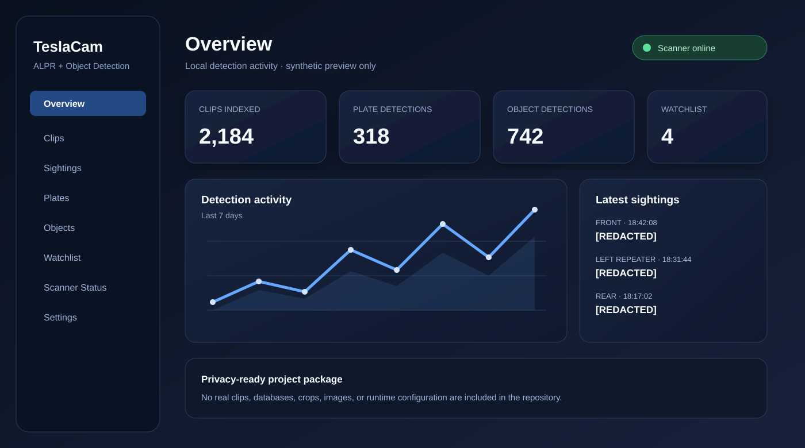
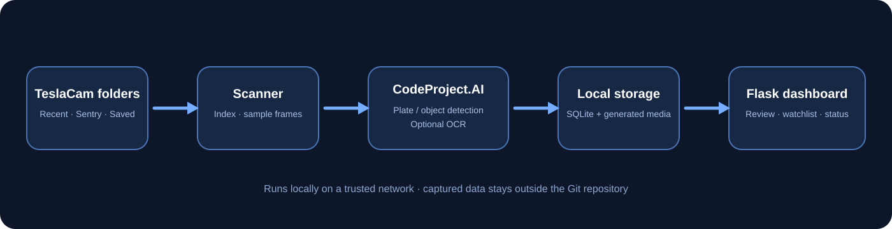

◫
TeslaCam indexing
Indexes RecentClips, SentryClips, and SavedClips from a USB drive, external SSD, NAS, TeslaUSB backup, or copied archive.
A local-first dashboard for reviewing Dashcam, Sentry Mode, Saved Clip, and TeslaUSB footage with AI plate detection, optional OCR, duplicate reduction, and clip-aware results.

TeslaCam archives can become a pile of video segments. The scanner samples the footage, preserves the source context, and makes detections easier to review in one place.
Indexes RecentClips, SentryClips, and SavedClips from a USB drive, external SSD, NAS, TeslaUSB backup, or copied archive.
Sends sampled frames to a compatible local CodeProject.AI custom license-plate endpoint and records confidence with source context.
Can use Tesseract OCR and/or a compatible local AI OCR endpoint as a review aid for detected plate regions.
Uses nearby timing, source clips, camera views, position, confidence, and OCR details so repeated frames do not overwhelm the results.
Review detections by time, camera, clip, confidence, OCR text, event, and locally generated visual previews.
Tracks queued work, scanner status, live logs, local settings, and CodeProject.AI availability from a responsive Flask interface.
TeslaUSB can provide the in-car capture and backup layer on a Raspberry Pi. This project can then scan its saved TeslaCam folders, or any compatible footage folder available to your Linux host.

The installer sets up the local app and systemd services. Configure the TeslaCam folder path and your local CodeProject.AI endpoint, then open the dashboard from a trusted device on your network.
See the source, installation instructions, architecture notes, CodeProject.AI setup, and full dashboard feature set on GitHub.